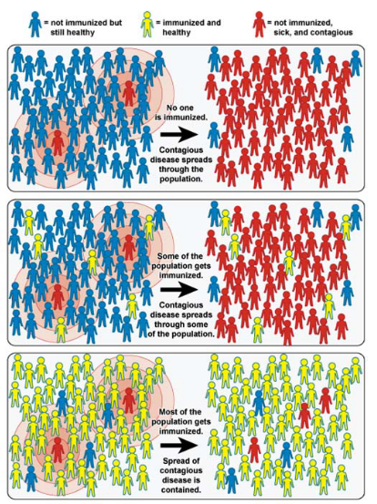
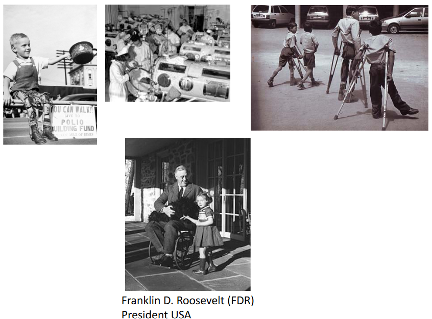

6 Antiviral Strategies and Virus Vaccines
There are two kinds of immunizations - artificial and natural. Natural immunization is when the body generates antibodies against an infection while artificial immunization is when the body receives the antibodies from somewhere else (e.g., like a vaccine).
6.1 Passive and Artificial Immunization
Passive immunization is a way to help people who can’t make their own antibodies, like those who have weak immune systems. It’s like giving them a temporary shield against diseases.
Imagine you meet a bad guy (the disease) for the first time, and your body doesn’t have the right tools to fight it off. That’s when passive immunization comes to the rescue. It gives you ready-made antibodies that can beat the bad guy. These antibodies are like superheroes in your bloodstream.
Getting these superhero antibodies can be a bit tricky. It’s expensive and hard to make enough of them because they usually come from lots of donors. Plus, there’s a chance that the antibodies might bring some unwanted stuff (contaminants) with them.
Sometimes, they use antibodies from animals, but that can cause a reaction in the person receiving them, like a “serum sickness.” To avoid this, scientists have come up with humanized antibodies, which are more effective but super expensive.
Here’s the thing: these antibodies are like short-term superheroes. They help for a while, but they don’t stick around in your body, so they won’t remember the bad guy for next time.
Active immunization is like superhero training for your body. It’s a way to teach your immune system to fight off bad guys (diseases) without actually getting sick.
Here’s how it works: you introduce a little piece of the bad guy, called an immunogen, to your body. It’s like showing your immune system a photo of the bad guy so it can recognize them later. This training stimulates your immune system to prepare itself to fight off the real bad guy.
So, virus vaccines are like your immune system’s cheat sheets. They help your body practice how to defeat a specific virus without making you sick. These vaccines are the best way to protect yourself from virus infections.
The process of giving these vaccines is called vaccination. It’s like your body’s superhero training camp, getting ready to fight off any virus that tries to attack you.
6.1.1 Immune Memory
Think of vaccines as your immune system’s memory boosters. The amazing thing about our immune system is that it remembers past battles with viruses and knows how to fight them off. Vaccines help create that memory.
When you get a vaccine, it’s like giving your immune system a sneak peek at the enemy. It learns to recognize the bad guy (virus) without you actually getting sick. Your immune system then remembers how to defeat that virus in case it ever shows up for a real fight.
6.2 Basics of Vaccines
When it comes to vaccines, one of the key things we aim for is to boost the body’s immune response, especially against the parts of viruses that are on their outer surfaces. Think of these parts like the “wanted posters” of the virus world – they help the immune system recognize the villains.
The immune system loves to create antibodies against these surface targets. These antibodies act like barriers, making it tough for viruses to infect new cells and spread throughout the body.
So, when designing vaccines, we often focus on these surface features, such as the glycoproteins on enveloped viruses (those wrapped in a protective envelope) and the capsid proteins on non-enveloped viruses (those without the envelope). By training the immune system to recognize and attack these surface features, we’re essentially giving it the tools it needs to stop viruses in their tracks. It’s like teaching your body to recognize the “bad guys” and protect you from future attacks!
6.2.1 Interactions Between Antibodies and Virus Surface Antigen
When our immune system encounters viruses, it creates antibodies to fight them off. But these antibodies are quite smart – they mainly recognize the three-dimensional shapes or “conformation” of the viral proteins.
Imagine viral proteins as keys, and the parts our antibodies recognize as unique keyholes. Different parts of the same protein can have multiple keyholes, which are called epitopes.
After an infection, our immune system might make antibodies to just a few of these epitopes, not necessarily all of them. However, when we get re-infected or get a booster vaccine, our immune system learns about more epitopes. It’s like improving our home security by getting more locks for our doors. The more “locks” our antibodies recognize, the better they can protect us from different versions of the virus.
Our immune system uses antibodies to defend against viruses, but these antibodies are quite large and can’t always access every part of a virus’s proteins. Imagine these antibodies as big keys trying to unlock a door. Some keyholes are hidden or only partially exposed, making them hard for the antibodies to reach.
As a result, critical sites on virus proteins, like where the virus attaches to our cells, might stay hidden from our antibodies. However, antibodies can still protect us by interfering with other aspects of the virus’s attack, like preventing it from sticking to our cells.
In some cases, though, antibodies can’t provide protection because the virus, like HIV-1, keeps changing over time. It’s like the virus is constantly changing its locks, making it hard for our immune system to find the right keys.
6.2.2 Vaccines Promote Health
Vaccines are like super shields that help keep us healthy. They’re especially good at preventing diseases that could make us sick. In a way, vaccines clear a path for our lives to go smoothly and let us grow without big health hurdles.
But they’re not just about one person – vaccines are like superheroes that protect whole communities and even entire populations. They work quickly, so when we get vaccinated, the effects kick in almost right away.
Plus, vaccines do something really amazing – they save lives and money. In fact, they’re one of the most cost-effective ways to keep us healthy.
6.2.3 Vaccine Cost and Production
Big pharmaceutical companies are typically the ones that make vaccines. Not only do they have the money to do so (whether it comes from drug sales or from funding from generous donors), but they also have the resources and the technology to mass produce them in a safe and efficient manner.
6.2.4 Components of Vaccines
A vaccine has three parts to it:
Antigens: These are like the “wanted posters” for our immune system. They help our body recognize and fight the virus. They’re the key ingredient that gets our immune system into action.
Stabilizers: Think of them as the “bodyguards” for the vaccine (e.g, MgCl2 in OPV vaccines and MgSO4 in measles vaccines). They keep it safe and stable during storage. These bodyguards need to be picky about where they work – things like temperature and pH matter.
Adjuvants: These are like the cheerleaders for our immune system. They boost, speed up, and extend the immune response, so our body is ready to fight off the virus. But sometimes they can get a little too excited, leading to an overactive immune response. So, adjuvants are a bit like our immune system’s personal trainers, making sure it’s in the best shape to protect us.
6.2.4.1 Adjuvants
Adjuvants are like booster engines for vaccines, helping them do their job effectively.
When it comes to live or weakened virus vaccines, they are good at activating both the cell-mediated and humoral immune responses. But not all vaccines are as versatile. Inactivated virus vaccines, for example, might not be able to activate both types of responses on their own. So, to give them a little boost, adjuvants are used.
A common adjuvant is made from aluminum hydroxide or aluminum phosphate salts. These adjuvants are like cheerleaders for the immune system, specifically encouraging type 2 T helper lymphocytes. These cells are important for producing antibodies.
However, aluminum adjuvants might not be the best fit when we want to trigger a different type of immune response, called Th1-like. For that, we’re developing new adjuvants, like oil-in-water-based ones. These can broaden the antibody responses and are being used in some human influenza vaccines in the EU.
Some adjuvants can even interact with specific parts of the immune system, like TLRs. Imagine them as unique keys that can unlock a specific type of immune response.
Antibiotics and preservatives in vaccines play important roles in keeping vaccines safe and effective.
Antibiotics, like neomycin, are used in the manufacturing process to protect the vaccine from bacterial contamination. This ensures that the vaccines produced are free from harmful bacteria. However, only tiny amounts of these antibiotics end up in the final vaccine, typically less than 25μg per dose. While this amount is usually safe, it can be a concern for individuals with antibiotic allergies, especially neomycin allergies.
Preservatives, such as thiomersal, formaldehyde, or phenol derivatives, are added to multi-dose vaccines. These preservatives help prevent the growth of harmful bacteria and fungi in the vaccine over time. They act like guardians, ensuring that the vaccine remains free from unwanted microbial contamination. This is particularly important for vaccines that come in multi-dose vials, as each dose must be as safe and effective as the first.
6.3 Categories of Virus Vaccines
6.3.1 Live Virus Vaccine
Live wild-type vaccines are straightforward and efficient tools for preventing disease.
In this approach, a virus that typically infects one animal species can be used to infect another closely related species to protect it against a similar pathogen. The key is that the virus used in the vaccine is not adapted to the new host, which means it has limited or no pathogenicity and doesn’t cause disease. However, it’s effective at generating an immune response because it shares important immunogenic determinants with the target pathogen.
For example, vaccinia virus is currently used as a live wild-type vaccine to prevent poxvirus infections in humans, even though there’s no naturally circulating human poxvirus. This approach has been successful in preventing diseases by leveraging related viruses to stimulate the immune system and protect against harmful pathogens.
6.3.2 Live Attenuated Virus Vaccine
Live attenuated virus vaccines are created by passing a pathogenic virus through various systems, such as animals, cells, or eggs. This process leads to the virus acquiring mutations that reduce its ability to cause disease while still allowing it to replicate.
The resulting attenuated virus can be used as a vaccine. When administered to humans, it can replicate within the body and induce a protective immune response. For example, the Edmonston B vaccine and the Moraten strain, which is a further attenuated measles vaccine developed in 1968, are examples of this approach. These vaccines are made from cold-adapted viruses, meaning they have limited growth at human body temperature (37°C).
Another example is the live attenuated influenza vaccine, which is created by reassorting the H and N genes with segments of other influenza viruses. This engineered virus can replicate in cooler areas of the airway, like the nasal mucosa, but not in the warmer lung environment. This approach has been successful in generating immunity without causing the disease itself.
6.3.2.1 Basis for Attenuation
The basis for attenuation in live attenuated virus vaccines lies in the accumulation of mutations through selective passage in an unnatural host. This process results in many mutations occurring in the virus. Interestingly, it is often challenging to pinpoint the specific genetic changes that lead to attenuation, and in many cases, the genetic basis for attenuation remains poorly understood.
The primary effect of these attenuating mutations is to reduce the levels of virus replication in the host, particularly at the portal of entry. As a result, the virus is unable to cause significant disease in the host. This reduction in replication capacity is a key factor that makes live attenuated virus vaccines effective in stimulating a protective immune response without causing severe illness.
Attenuating mutations in live attenuated virus vaccines can manifest in both non-coding regions (NCR) and coding regions of the virus genome. For instance, mutations in the 5’ NCR (non-coding region) of the poliovirus genome have the effect of altering the predicted secondary structure. This alteration in structure decreases virus replication by affecting the function of the neural-tissue-specific IRES (Internal Ribosome Entry Site). In simpler terms, these mutations disrupt the virus’s ability to replicate effectively, which is a critical part of why it doesn’t cause severe illness when administered as a vaccine.
Another example is seen in adenovirus vaccines, where attenuating mutations are employed to limit infection to a specific area of the body, typically the gut. This restriction prevents the virus from causing disease in other parts of the body. This strategy is an essential component of live attenuated virus vaccines, as it ensures that the virus remains harmless while still promoting a strong immune response.
6.3.2.2 Pros of Live Attenuated Viruses
There are several advantages to using wild-type or live attenuated virus vaccines:
Representative Immune Response: These vaccines trigger an immune response that closely resembles what happens during a natural infection. This is advantageous because it leads to a more comprehensive and effective immune defense.
Long-Lasting Immunity: Vaccination with live attenuated vaccines can provide long-lasting immunity. This means that individuals may remain protected against the virus for an extended period, often years or even a lifetime.
Simplified Delivery: Live attenuated virus vaccines can be administered through various routes, such as orally or nasally. This versatility in administration simplifies the process of delivering vaccines, making them more accessible and convenient.
Mimicking Natural Infection: By using the same routes of administration as natural infection, such as with the oral Sabin polio vaccine or the nasal FluMist influenza vaccine, these vaccines mimic the way the virus typically enters the body. This approach enhances the vaccine’s effectiveness and helps the immune system recognize and respond to the virus more effectively.
6.3.2.3 Cons of Live Attenuated Viruses
Live attenuated virus vaccines have several limitations:
Manufacturing Costs: These vaccines can be expensive to produce. The process of generating and maintaining live attenuated strains requires careful monitoring and quality control, which can increase manufacturing costs.
Stability and Cold Chain Requirements: Live attenuated vaccines are relatively unstable and can be sensitive to environmental conditions. Many of them require constant refrigeration, which can be a challenge in resource-limited settings. Maintaining a “cold chain” to preserve vaccine viability during storage and transportation is essential but can be logistically complex.
Safety Concerns for Immunocompromised Individuals: Live attenuated vaccines may pose a risk to individuals with weakened or abnormal immune systems, such as those with certain medical conditions or undergoing immunosuppressive treatments. In such cases, the vaccine virus could cause serious illness.
Reversion to Virulence: Although these vaccines are designed to be less virulent than the wild-type virus, there is a slight risk of reversion to a more virulent form. This reversion could lead to the vaccine virus causing disease instead of conferring immunity. For example, in rare instances, the Sabin polio vaccine strains have reverted to neurovirulent forms.
Limited Coverage: Some live attenuated vaccines, like the trivalent oral polio vaccine (consisting of Sabin strains 1, 2, and 3), may not provide complete protection against all circulating strains of the virus. This limitation can be addressed by using other vaccine types, like inactivated vaccines, in combination with live attenuated vaccines.
6.3.3 Inactivated Virus Vaccine
Inactivated virus vaccines work differently. First, they grow the virus in things like eggs or cells. Then, they purify the virus, which means they clean it up. After that, they use something like formaldehyde, detergent, or high heat to stop the virus from working. But the important part, the virus parts that help our immune system, is still there.
The cool thing is that these inactivated viruses can’t make us sick because they can’t grow or spread. An example of this kind of vaccine is the Salk inactivated polio vaccine (IPV). It’s a safe way to help our bodies learn to fight the virus without us getting sick from it.
6.3.3.1 Pros and Cons of Inactivated Virus Vaccines
Inactivated virus vaccines have their own advantages and limitations. On the bright side, they can teach our immune system about lots of different parts of the virus. They’re also easier to store because they don’t need to be super cold, which makes them more convenient. Plus, they’re safer because they can’t cause an infection.
However, there are some downsides too. These vaccines can be pretty costly to make. They might not give us as long-lasting protection because they can’t fully mimic a real infection. So, we might need several shots to stay safe. And, unlike some other vaccines, they can’t be just put in your mouth or nose – they have to be injected with a needle. Often, they also need an extra boost from something called an adjuvant to work their best.
6.3.3.2 Adminstering Killed Vaccines
Vaccines are given in different ways. Some are injected into a muscle (intramuscular) using a needle, which is often the case when they have special boosters called adjuvants. Others are injected under the skin (subcutaneous), and some are given with a very tiny needle in the top layer of the skin (intradermal). There are also vaccines you can take by mouth, so no needles are needed. And for some, there’s a special spray you can breathe in through your nose, again avoiding needles. These different methods help people get their vaccines in the way that’s most comfortable and effective for them.
6.3.3.2.1 Giving Influenza Virus Vaccines
Generally speaking, it’s easier to give live attenuated viruses (i.e., vaccines with a weakened virus) than it is to give a killed virus.
6.3.4 Subunit Virus Vaccines
Subunit virus vaccines are made from parts of the virus that are known to trigger a strong immune response. They don’t contain the virus’s genetic material and can’t cause infection. These vaccines are often less expensive to make. Sometimes, these purified virus proteins can even stick together and form virus-like particles, which can be even better at getting the immune system’s attention. This is a safe and effective way to make vaccines that help protect us from dangerous viruses.
6.3.4.1 Virus Like Particles
Virus-like particles are a special kind of subunit virus vaccine. They’re made to look like the real virus, with a similar structure and shape, but they don’t have the virus’s genetic material. These vaccines are already available for some viruses like HPV in the form of Cervarix and Gardasil. They help our immune system learn how to fight the real virus. Researchers are also working on making these vaccines for other viruses like the flu and parvovirus, which could help protect us from these diseases too.
6.3.4.2 Pros and Cons of Subunit Virus Vaccines
Subunit virus vaccines, like virus-like particles, have some good things going for them. They’re easier and cheaper to make than other types of vaccines. They’re also stable, meaning they don’t need special conditions for storage. This type of vaccine doesn’t usually have side effects like some others might, making them a safer option. And they can be given to people with weakened immune systems, which is important for those who might be more vulnerable to infections.
There are some downsides to subunit virus vaccines as well. Because they don’t cause an actual infection, they might not provide long-lasting protection. You might need more than one dose to make sure you’re well-protected. These vaccines usually need an extra ingredient called an adjuvant to work effectively. And, they’re typically given through an injection, which isn’t always fun.
6.3.5 mRNA Vaccines
Let’s break down how mRNA vaccines work. These vaccines contain a tiny piece of genetic material called mRNA, which is like a set of instructions from the virus. This mRNA is delivered to your body using very small particles called nanoparticles. When it’s inside your body, the mRNA acts as a recipe to make a piece of the virus, but not the whole virus. This piece then triggers your immune system to respond, which helps protect you from the virus if you ever encounter it in the future. It’s like a practice run for your immune system.
6.3.5.1 Structure of mRNA in Vaccines
The mRNA that is used in vaccines is like a set of instructions written in a specific language. This language has its own alphabet made of letters called nucleotides. To make sure the instructions are clear and work properly, we need to consider a few things.
First, the purity of the mRNA is crucial. Even tiny bits of other stuff mixed in can make the instructions less effective.
The mRNA has a beginning and an end. Think of it like a story. The starting and ending parts of the mRNA, called the 5’ and 3’ untranslated regions (UTRs), can affect how well the instructions are understood by the cell. Also, the length of a specific part called the polyA tail matters.
The 5’cap is like the title of the story. It’s at the very beginning and is important for translation.
Sometimes, we need to make the instructions more understandable for the cell, and this is called codon optimization. It’s like rephrasing the instructions to be clearer and more efficient. We can even use special letter changes (modified nucleosides) to help with this. It’s all about making sure the mRNA instructions are as good as they can be.
6.3.5.2 Classes of mRNA Vaccines
There are two main types of RNA vaccines, each with its unique features:
NRM (Non-Replicating mRNA): This type of RNA vaccine contains the instructions for making a part of the virus, like its outer coat. But it doesn’t have the ability to replicate itself. It’s like giving your cells a snapshot of the virus, so they know how to recognize it and fight it off. To deliver these instructions into your cells, they are enclosed in tiny lipid nanoparticles, like a protective bubble.
SAM (Self-Amplifying mRNA): SAM vaccines are a bit different. They not only carry the instructions for making a piece of the virus but also the tools to replicate themselves. It’s like giving your cells a small machine that can make copies of the instructions. These special machines come from other viruses like Semliki-Forest and Sindbis viruses. They also need lipid nanoparticles to help deliver the instructions.
Both types of vaccines use lipid nanoparticles to get the instructions inside your cells. These instructions teach your cells how to make a piece of the virus, so your immune system can learn to recognize and fight the virus if it ever comes along. It’s like a training program for your immune system!
6.3.5.3 Pros and Cons of mRNA Vaccines
One good thing about mRNA vaccines is that they are quick to make. All you need is the instructions for a specific part of the virus. This makes it faster to create vaccines when we need them, especially during big outbreaks like pandemics.
Another plus is that these vaccines can be made in large quantities. This is really important during a pandemic when many people need protection.
But there are some challenges too. This is a new technology, so people need to understand how it works and be okay with it. We still need to make these vaccines even better and safer. That means studying and improving them more.
And there’s one more thing to watch out for. We need to keep an eye on the virus. Sometimes it can change and become immune to the vaccine. We need to figure out how to handle this.
6.3.6 Other Categories of Vaccines
There are a few covered here:
Chimeric Vaccines
How Chimeric Vaccines Work Chimeric vaccines are a bit like mix-and-match. We can take some not-so-harmful viruses and change them to have parts of another virus. This way, they can help our immune system learn how to fight that other virus. It’s like giving our body a sneak peek at the enemy’s weaknesses.
DNA Vaccines
Production of DNA Vaccines Chimeric vaccines are a bit like mix-and-match. We can take some not-so-harmful viruses and change them to have parts of another virus. This way, they can help our immune system learn how to fight that other virus. It’s like giving our body a sneak peek at the enemy’s weaknesses.
Nanoparticles
Illustration of a Nanoparticle Vaccine Nanoparticles are like tiny platforms where virus parts can stand. These virus parts are the things that our immune system recognizes and fights against. Some nanoparticles show these virus parts on their surface, like a badge. Others are like little containers, holding the virus parts inside. There are also vaccines made of tiny pieces from the virus, like a mix of jigsaw puzzle pieces. All these tricks help our immune system practice recognizing and fighting the virus.
6.4 Goals of Vaccination
6.4.1 Prevention
Preventing disease is a big reason for vaccines. They help control diseases in a whole group of people, like in a town or country. Most vaccines are given before someone gets sick. But sometimes, if you’ve been around a really bad virus, you can get a special vaccine after to stop the virus from making you sick. An example of this is the rabies vaccine, which you might get after a risky animal bite.

Some vaccines not only protect the person who gets them but also help keep the whole community safe. This is called herd immunity. It means that when many people in a community get vaccinated, it’s hard for the virus to spread. So, even people who can’t get vaccinated are safer because most others around them are protected.
Most vaccines stop you from getting sick if you’re exposed to a virus, but they don’t always stop you from getting the virus. For example, the vaccine for hepatitis B helps prevent the virus from spreading from an infected mother to her baby. This is important to protect newborns from the virus.
6.4.1.1 Global Vaccination Coverage
Global vaccination coverage means how many children around the world get the vaccines they need to stay healthy. It’s important for as many children as possible to get vaccinated to prevent diseases from spreading.
Experts have identified five important factors to make sure that vaccination coverage is high. First, we need good data to know who needs vaccines and if they are getting them. Second, communities should be involved in deciding about vaccines and making sure everyone can get them. Third, it’s important that even people in hard-to-reach places or those who have been forced from their homes can still get vaccines. Fourth, a strong healthcare system is needed to make sure vaccines are given out properly. And fifth, vaccines must be available everywhere, all the time, so that anyone who needs them can get them. These are the key factors to make sure that as many children as possible are protected from dangerous diseases through vaccination.
Vaccines have since become an important part of medication when travelling (i.e., travel medicine).
6.4.2 Eradication
Eradication is when we completely get rid of a disease, making it no longer a threat to people. To do this, we need to stop the virus from being in a host, which is like the home of the virus. Viruses can be in different hosts, like animals or humans. Sometimes, a virus can go from a host to another, causing infections.
The kind of host the virus comes from is important to control the infection in people. The relationship between the host and the virus can be complicated. For example, yellow fever virus has two cycles: one in the jungle and one in cities. In the jungle, it’s carried by mosquitoes and monkeys.
Eradication is easier if there’s no known animal host, like with smallpox. But if the virus has an insect host, like YFV, it’s more complex. Eradication is a big goal in fighting diseases, and understanding the role of different hosts is important in this effort.
6.4.2.1 Smallpox Virus
Smallpox was a terrible disease, but thanks to a powerful vaccine and the fact that it only lived in humans (it had no animal host), we were able to completely get rid of it. In 1950, the World Health Organization decided to work on getting rid of smallpox in the Americas. This was a big effort.
They used a very effective vaccine to protect people from smallpox. Because there were no animals involved in spreading the virus, it was easier to control and eventually eliminate smallpox. This was a huge success in the fight against diseases, and it’s a good example of how vaccines and focused efforts can make a big difference.
In 1965, the World Health Organization began a campaign to wipe out smallpox all over the world. People were vaccinated on a global scale to protect them from this disease. It was a big effort.
By the mid-1970s, even babies were getting vaccinated against smallpox. This helped ensure they didn’t get sick from the virus.
The last time anyone got sick with smallpox from natural sources was in Somalia in 1977. It was a really big deal when someone saw a rash that looked like smallpox because it meant the virus might still be around.
But in December 1979, the World Health Organization made a historic announcement. They said that smallpox was completely gone from the world! This was a huge achievement because it was the first time ever that we had completely eliminated a disease caused by microbes (tiny living things like viruses). It showed the world that with hard work and vaccinations, we could get rid of even the deadliest diseases.
6.4.2.2 Poliovirus

In 1955, a scientist named Jonas Salk started testing his special polio vaccine. It wasn’t a live virus, but a killed one, which means it couldn’t make people sick. He wanted to see if it could protect people from getting polio.
Around the same time, another scientist named Albert Sabin was working on a different kind of polio vaccine. His vaccine used a live virus, but it was very weak, so it couldn’t give people full-blown polio. In 1957, they started trying it out on people, and by 1960, it was being used widely. These vaccines were a big step forward in protecting people from polio, a very serious disease.
Back in May 1988, the World Health Organization (WHO) made a big decision. They wanted to get rid of polio, a disease that was making people very sick, by the year 2004. It was like a worldwide mission to make sure no one got polio anymore.
But here’s the thing: in 2015, we were still seeing cases of polio caused by the virus in nature, even though we had the technology to stop it. The problem wasn’t about what we could do; it was more about politics and other issues that were getting in the way. So, while we made a lot of progress, we still had some work to do to completely get rid of polio.
6.4.3 Vaccination for Pets
6.5 Challenges for Vaccination
6.5.1 Immunization in Early and Later Life
For babies, they have something called maternal antibodies. These are like shields given to them by their moms. Sometimes, these shields can interfere with the vaccines. For example, a special kind of vaccine for measles doesn’t work well when given to very young babies, so we wait until they are at least 1 year old.
Now, as people get older, their immune system ages too. It’s like the immune system gets a bit tired. So, when you’re elderly, your body might not respond as well to vaccines, and you might need more booster shots to keep your immunity strong. It’s a bit like charging your phone more often when the battery starts getting weak.
6.5.2 Adverse Events Following Immunization (i.e., AEFI)
When it comes to vaccines, they are usually very safe and made with high standards to make sure they don’t harm people. But in very rare cases, some people might have bad reactions after getting a vaccine.
The reason for these bad reactions can vary. Sometimes, it’s because of something related to the virus the vaccine is supposed to protect against. For example, in extremely rare cases, the polio vaccine can cause a problem called vaccine-associated paralytic polio. It’s like the vaccine temporarily acts a bit like the actual disease.
These bad reactions are not easy to understand or predict because they happen so rarely. But here’s the thing: the risk of having a bad reaction from a vaccine is much, much lower than the risk of getting sick from the actual virus. So, even though these rare reactions can be scary, it’s still safer for the whole community to get vaccinated. That way, it helps to stop the virus from spreading.
However, when people hear about these rare bad reactions, it can make them worried about getting vaccinated. That’s why public health experts work hard to explain the risks and benefits of vaccines, so people understand that the benefits of vaccination usually far outweigh the risks.
Certainly, here’s a simplified version:
Sometimes, vaccines that were used in the past didn’t work very well and could actually make people sicker. For example, there was a measles vaccine in the 1960s that didn’t give good protection, and it caused a different kind of measles infection.
Another example is a vaccine for respiratory syncytial virus (RSV). People who got this vaccine actually had a worse RSV infection and got sicker.
These are old examples, and vaccines today are much better and safer. Scientists learn from the past and make sure new vaccines work well and don’t cause these kinds of problems.
6.5.3 Misinformation and Poltiics
Sometimes, people spread false information about vaccines. For example, there was a fake report that said the measles vaccine could cause autism. This scared some parents, and they didn’t want to get their kids vaccinated. As a result, more kids got sick with measles in the UK.
Also, on the internet and social media, there are groups of people who say vaccines are bad and try to convince others not to get vaccinated. This can be a problem because vaccines are important for keeping us healthy and safe. It’s important to listen to real doctors and scientists who say that vaccines are a good way to prevent diseases.
6.5.4 Vaccination Costs
Vaccines might be too expensive to afford for the layperson, and this is a cause for concern among low-income individuals (especially in developing countries). New technologies can potentially be used to lower costs.
6.5.5 Antibody Escape Mechanism
Viruses can be very tricky. They can change themselves a little bit to escape from the antibodies our bodies make to fight them. It’s like hiding from the good guys. Some viruses even have a special trick - they make something to distract our immune system, so it doesn’t attack the real virus.
To make a good vaccine, we need to make sure it teaches our bodies to fight the virus in different ways. This way, even if the virus tries to hide or distract our immune system, we’ll be ready to stop it.